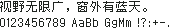

字样资料 / 最像素 Zpix
最像素 Zpix 12px（字宽13）
样文完整 · 13×12 · 简体
放大观察 · 3×

原尺寸 · 1×
来源与字样信息
- 家族
- 最像素 Zpix
- 字符框
- 13×12 px
- 字符范围
- 简体
- 样本文字
- 视野无限广，窗外有蓝天。
- 拉丁样文
- 0123456789 AaBb GgMm !?:+-.
- 覆盖说明
- 样文完整
- 缺字
- 本次样本文字未发现缺字；不代表完整字库覆盖
- 风格
- 未分类
- 用途
- 像素字体
- 字形来源
- SolidZORO 的中文像素字体；直接使用官方 BDF。 从原始 BDF 的 BITMAP 直接解码，保留原生字框与半角宽度。
- 授权状态
- 已有许可线索
- 许可说明
- 个人非商业与教育用途免费；商业使用需付费授权，禁止修改、转换或拆分字体。本资料仅作渲染预览，不再分发字体或字形数据。
- 说明
- 统一新样文；拉丁字宽按源字体保留，可能为全角、半角或原生不等宽。样文覆盖不代表完整字库覆盖。
- 获取方式
在 Releases 获取 zpix.bdf 原始点阵；个人/教育用途免费，商业用途需另行授权。
- 来源
- 来源项目 / 资料页
- 原生证据
说明：Direct native BDF BITMAP decoding, Unicode exact match; no fallback or script substitution.
查看原生设计来源
仅展示固定字样，不提供字体文件。预览不授予字体使用许可；样文覆盖不等于完整字库覆盖，实际使用前请核实来源项目的适用授权。